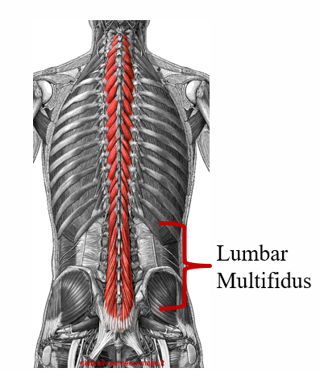

Lumbar Musculature
Lumbar Multifidus (LM)
The multifidus is a deep local spinal muscle that spans the entire length of the spine. The multifidus muscle originates on the transverse processes and inserts
onto the spinous process of the vertebrae above, spanning 1-3 segments depending on whether you are looking at the deep, intermediate, or superficial fibres.
The lumbar portion is found on either side of the lumbar vertebrae (L1-L5). LM has been shown to provide segmental stabilization at rest and proprioceptive control
during movement, in addition to playing a key role in the transferral of forces from the lower extremities through the kinetic chain.

Erector Spinae (ES)
The erector spinae group is composed of the iliocostalis, longissimus, and spinalis muscle groups. In the lumbar spine, it is primarily composed of the
iliocostalis and longissimus groups. The iliocostalis lumborum (the lumbar section of the iliocostalis group) originates on the lateral crests of the sacrum,
the dorsal sacroiliac, inferior oblique, and sacrotuberous ligaments, the posterior aspect of the medial lip of the iliac crest, the spinous processes of T11-L5,
and the supraspinous ligament. It extends up the back to insert into the inferior border of the angles of the lower 6 or 7 ribs. The longissimus thoracis blends with
the iliocostalis lumborum in the lumbar region, sharing an origin, as well as originating on the posterior surfaces of the transverse and accessory processes of the
lumbar vertebrae and the anterior layer of the thoracolumbar fascia. This muscle then inserts onto the tips of the thoracic transverse processes all the way up to T2 as
well as into the lower 9 or 10 ribs between the tubercles and angles. Both the iliocostalis lumborum and longissimus thoracis muscles perform trunk extension when
working bilaterally and sidebending when activating unilaterally.